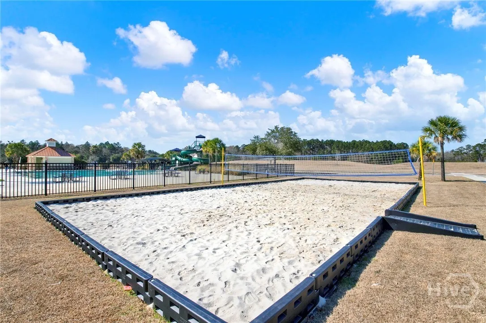

Photo pair 1


geometrically_supported
Shared-image context: SHARED IMAGE: shared-4931 appears in 3 Airbnb listings; possible generic imagery or related hosts, not property-specific evidence
Hash / geometric comparison evidence
{
"hash_hamming": {
"dhash": 3,
"phash": 0,
"center_phash": 0
},
"hash_min": 0,
"priority_policy": "obvious_v2_both_phashes_le_6_realtor_shared_excluded",
"exact_hash_hamming": {
"phash": 0,
"center_phash": 0
},
"orb_ransac": {
"score": 0.773,
"detail": {
"inliers": 773,
"ratio_matches": 773,
"coverage": 0.4449398816210888,
"homography": [
[
0.9996773064547387,
-0.00030242348897659697,
0.2120188071487396
],
[
3.02302400106391e-05,
0.9994099493915727,
0.1822263476153502
],
[
-8.28234421321017e-08,
-7.350733086417012e-07,
1.0
]
]
},
"comparison_ms": 11.28555899776984,
"feature_lookup_or_extraction_ms": 46.2561239983188
}
}